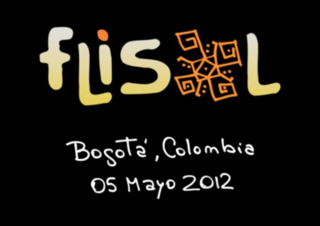

Redes Libres en FLISOL Bogotá
ABSOLUTELLY NO WARRANTY | CC-BY-SA | OSiUX | .git

Me invitaron a dar una conferencia magistral en el FLISOL de Bogotá, asi que pude participar de varias actividades, entre ellas:
- entrevista a radio city sobre redes/software/cultura/libre.
- conferencia sobre redes libres en Argentina.
- debate con invitados internacionales y consejal de alcaldía sobre políticas de software libre y obviamente hablé de redes libres.
- foro sobre redes libres con integrantes de redes libres de Colombia.
- levantar un nuevo nodo de BogotáMesh.
- conocer la muy activa y comprometida comunidad local.
- intercambiar experiencias sobre redes en charlas informales.
- disfrutar de un asadito a la colombiana.
- conocer un poco la movida nocturna. ;-)
- ascender al Monte Monserrate.
- dar una charla sobre anonimato y privacidad en la red.
Intentaré hacer un resumen detallado y espero no olvidar nada!